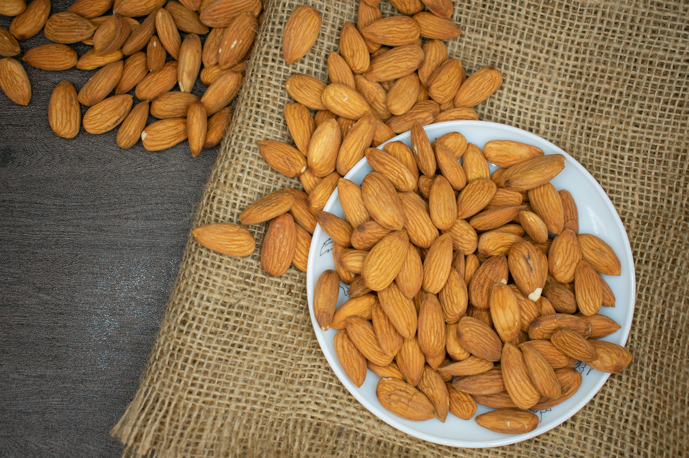
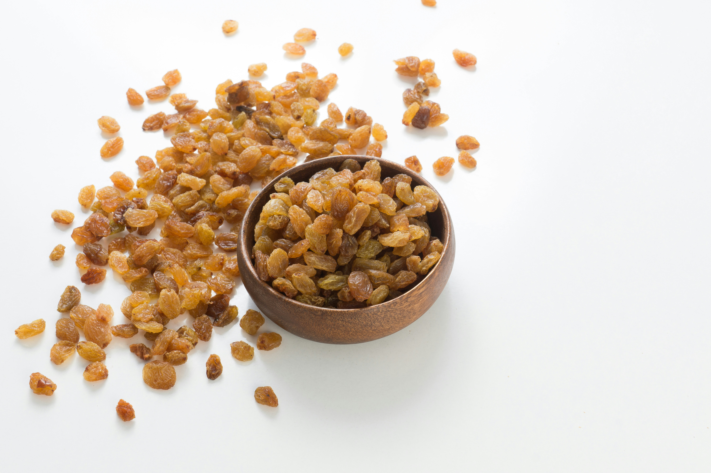

About
Dried fruit has been available for thousands of years in the Mediterranean and Middle East.
Dried fruit is made by taking the water out of the fruit by sun drying or using a special machine called a dehydrator.
Since the water is removed during drying, this also means that the natural sugars in the fruit are concentrated.
My Top Three Dry Fruits
Almonds
Almond economically important crop tree and its edible seed.
Native to southwestern Asia, almonds are grown primarily in Mediterranean climates.
Almonds grown as nuts may be eaten raw, blanched, or roasted and are commonly used in confectionery baking.
Dates

Dates are small, sweet fruits that grow in large bunches on date palm trees.
A single bunch may contain as many as 1,000 dates.
Dried dates have a very high amount of sugar, at least half of their total weight.
Raisins
A raisin is a dried grape.
Raisins are produced in many regions of the world and may be eaten raw or used in cooking, baking, and brewing.
Fun Facts
- Almonds aren't actually nuts, they're seeds of the almond fruit!
- Dates have been cultivated for over 6,000 years and were once called "the candy of nature."
- Raisins can shrink to one-fifth their original size during drying!
Read more about dry fruits on Wikipedia.